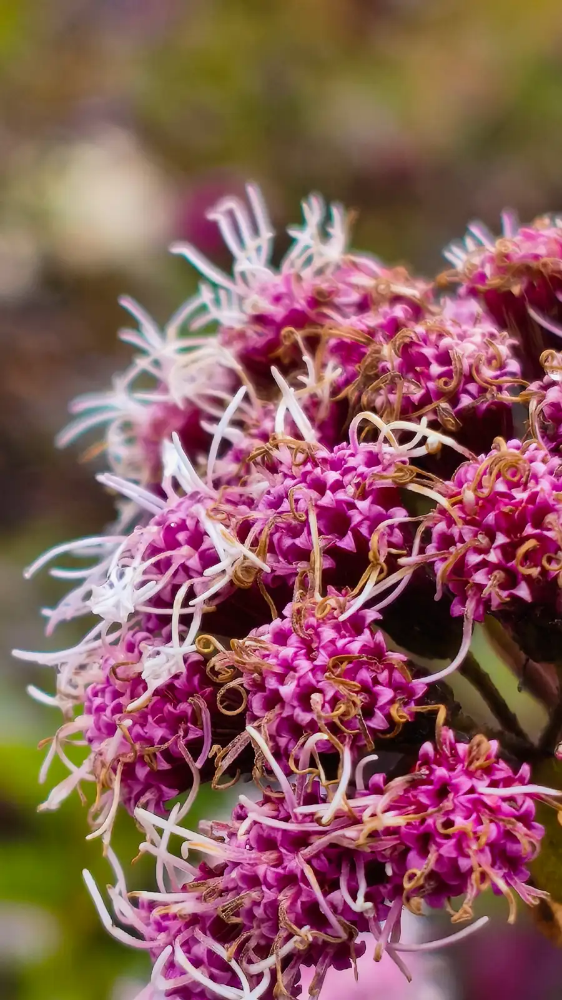

Пурпурный цветок пуны
Eupatorieae
Каждый цветок размером с ноготь, а рыльца торчат во все стороны.
Соцветие собрано из десятков крошечных цветков, и у каждого наружу выходят длинные раздвоенные рыльца — отсюда ощущение, что цветок мохнатый. Вблизи это самое сложное устройство из всего, что растёт на этой высоте.
Цветёт
determinavit
группа
род не разводим
?